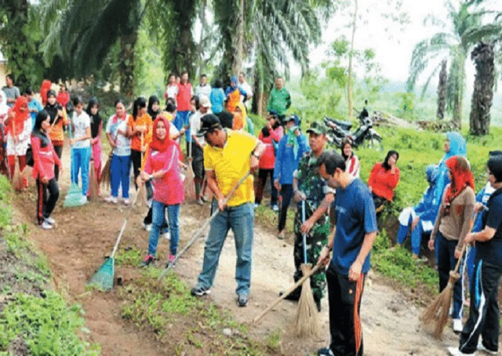

Bencana banjir merupakan salah satu bencana yang sudah akrab
ketika memasuki musim penghujan. Beberapa daerah di Indonesia
menjadi daerah langganan banjir. Oleh sebab itu kita sebagai
masyarakat harus bisa mencegahnya. Pemberitahuan terkait
pentingnya menjaga lingkungan merupakan hal yang perlu
diperhatikan oleh warga untuk bisa mencegah banjir.
Banjir terjadi bukan hanya hujan deras. Namun terjadi juga karena
faktor manusia seperti tidak membuang sampah sembarangan dan tidak
menjaga saluran air sehingga memperparah kondisi banjir yang
terjadi. Salah satu langkah untuk meningkatkan kesadaran
masyarakat dalam menjaga lingkungan agar bisa mencegah terjadinya
banjir adalah melakukan sosialisasi.
Masyarakat di lingkungan sekitar bisa diarahkan oleh ketua RT
setempat untuk melakukan gotong royong seminggu sekali. Contoh
kegiatan yang dapat dilakukan ialah membersihkan saluran air.
Banjir bisa terjadi karena saluran air yang tidak bekerja sesuai
fungsinya. Hal tersebut bisa terjadi karena rusak atau mampet
karena sampah. Saluran air yang langsung terhubung ke sebuah
sungai biasanya rentan tertutup sampah dan sangat berbahaya jika
terjadi hujan deras karena air akan meluap. Oleh sebab itu tidak
ada salahnya untuk gotong royong bersama tetangga untuk
membersihkan saluran air. Sehingga nanti saat hujan air akan
mengalir dan tidak tertahan yang menjadi penyebab utama banjir.
Pembersihan tersebut harus dilakukan secara berkala.
Perbaikan dan pembersihan saluran air tentu harus ada. Di wilayah
tertentu bisa diadakan secara gotong royong. Penjagaan ini harus
dilakukan secara terus menerus dengan waktu berkala. Hal ini
bertujuan agar saat terjadi hujan deras, tidak menimbulkan saluran
air mampet yang justru berpotensi pada hadirnya banjir.
Berikutnya, ketua RT masing-masing dapat menyerukan kepada
masyarakat untuk disiplin membuang sampah. Bila kerjasama antar
warga terjalin dengan baik, pencegahan banjir bisa dilakukan
dengan mudah. Tentu saja jalinan warga dan pemerintah tetap harus
dilakukan. Bila ada pembangunan di suatu wilayah oleh proyek
tertentu dan hal itu akan mengganggu lancarnya saluran air, tentu
warga harus segera melaoprkan ke pemerintah untuk diadakan sebuah
tindakan yang tepat.
Gotong Royong Mencegah Banjir
